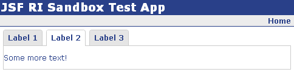
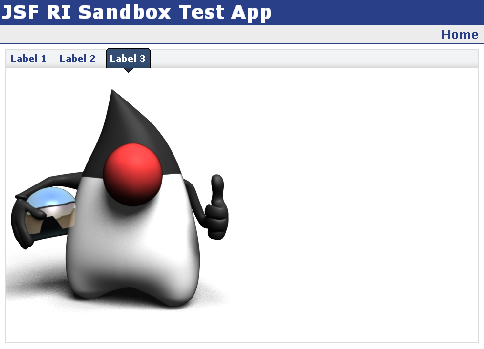

treeView component is a wrapper for the UI JavaScript TabView component. Here is
a few sample usages:
This will render a tabView that looks like this:
Note the
tabStyle attribute of the tabView component. The currently
support styles are "border" (which is the default), "round" and "module." If you set tabStyle
to "round", your tabView will look like this:
And "module" looks like this:
